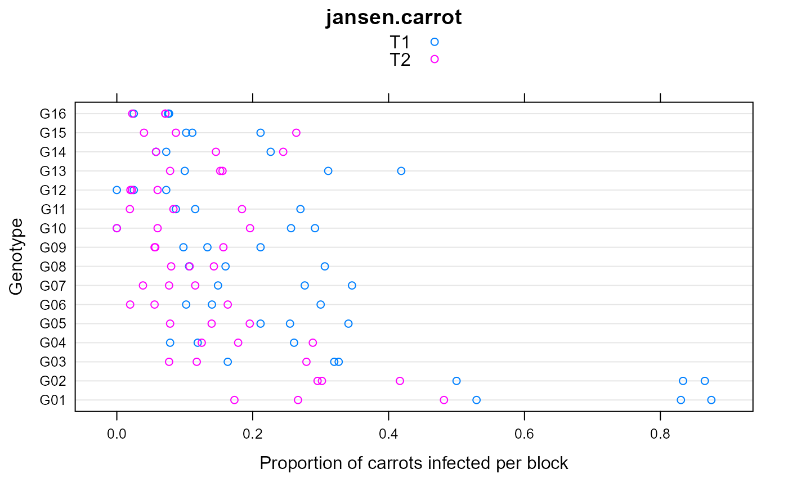

jansen.carrot.RdInfestation of 16 carrot genotypes by fly larvae, comparing 2 treatments in 16 blocks.
data("jansen.carrot")
A data frame with 96 observations on the following 5 variables.
trttreatment
gengenotype
blockblock
nnumber of carrots sampled per plot
ynumber of carrots infested per plot
This experiment was designed to compare different genotypes of carrots with respect to their resistance to infestation by larvae of the carrotfly.
There were 16 genotypes, 2 levels of pest-control treatments, conducted in 3 randomized complete blocks. About 50 carrots were sampled from each plot and evaluated. The data show the number of carrots and the number infested by fly larvae.
J. Jansen & J.A. Hoekstra (1993). The analysis of proportions in agricultural experiments by a generalized linear mixed model. Statistica Neerlandica, 47(3), 161-174. http://doi.org/10.1111/j.1467-9574.1993.tb01414.x
Used with permission of J. Jansen. Electronic version supplied by Miroslav Zoric.
None.
library(agridat) data(jansen.carrot) dat <- jansen.carrot libs(lattice) dotplot(gen ~ y/n, data=dat, group=trt, auto.key=TRUE, main="jansen.carrot", xlab="Proportion of carrots infected per block", ylab="Genotype")# Not run because CRAN wants < 5 seconds per example. This is close. libs(lme4) # Tentative model. Needs improvement. m1 <- glmer(cbind(y,n-y) ~ gen*trt + (1|block), data=dat, family=binomial) summary(m1)#> Generalized linear mixed model fit by maximum likelihood (Laplace #> Approximation) [glmerMod] #> Family: binomial ( logit ) #> Formula: cbind(y, n - y) ~ gen * trt + (1 | block) #> Data: dat #> #> AIC BIC logLik deviance df.resid #> 608.9 693.5 -271.4 542.9 63 #> #> Scaled residuals: #> Min 1Q Median 3Q Max #> -3.973 -1.016 -0.273 1.115 2.908 #> #> Random effects: #> Groups Name Variance Std.Dev. #> block (Intercept) 0.02472 0.1572 #> Number of obs: 96, groups: block, 3 #> #> Fixed effects: #> Estimate Std. Error z value Pr(>|z|) #> (Intercept) 1.07446 0.20722 5.185 2.16e-07 *** #> genG02 -0.06075 0.26611 -0.228 0.81941 #> genG03 -2.07415 0.26296 -7.888 3.08e-15 *** #> genG04 -2.79945 0.30159 -9.282 < 2e-16 *** #> genG05 -2.09256 0.26415 -7.922 2.34e-15 *** #> genG06 -2.58980 0.28306 -9.149 < 2e-16 *** #> genG07 -2.11827 0.26541 -7.981 1.45e-15 *** #> genG08 -2.52386 0.28125 -8.974 < 2e-16 *** #> genG09 -2.82317 0.29709 -9.503 < 2e-16 *** #> genG10 -2.63026 0.29208 -9.005 < 2e-16 *** #> genG11 -2.81654 0.30587 -9.208 < 2e-16 *** #> genG12 -4.42573 0.49179 -8.999 < 2e-16 *** #> genG13 -2.01259 0.27119 -7.421 1.16e-13 *** #> genG14 -3.09043 0.30759 -10.047 < 2e-16 *** #> genG15 -2.88159 0.29641 -9.722 < 2e-16 *** #> genG16 -3.79170 0.39154 -9.684 < 2e-16 *** #> trtT2 -1.88405 0.25129 -7.498 6.50e-14 *** #> genG02:trtT2 0.18457 0.36089 0.511 0.60905 #> genG03:trtT2 1.15294 0.38887 2.965 0.00303 ** #> genG04:trtT2 2.20759 0.39970 5.523 3.33e-08 *** #> genG05:trtT2 1.05088 0.39904 2.634 0.00845 ** #> genG06:trtT2 0.91731 0.44606 2.056 0.03973 * #> genG07:trtT2 0.43275 0.43498 0.995 0.31980 #> genG08:trtT2 1.22717 0.42157 2.911 0.00360 ** #> genG09:trtT2 1.29446 0.44172 2.931 0.00338 ** #> genG10:trtT2 1.06684 0.44495 2.398 0.01650 * #> genG11:trtT2 1.27707 0.46195 2.765 0.00570 ** #> genG12:trtT2 1.89552 0.69089 2.744 0.00608 ** #> genG13:trtT2 0.89074 0.40707 2.188 0.02866 * #> genG14:trtT2 2.14280 0.42006 5.101 3.38e-07 *** #> genG15:trtT2 1.81864 0.41727 4.358 1.31e-05 *** #> genG16:trtT2 1.79019 0.56060 3.193 0.00141 ** #> --- #> Signif. codes: 0 '***' 0.001 '**' 0.01 '*' 0.05 '.' 0.1 ' ' 1#> #> #> #># Todo: Why are these results different from Jansen? # Maybe he used ungrouped bernoulli data? Too slow with 4700 obs